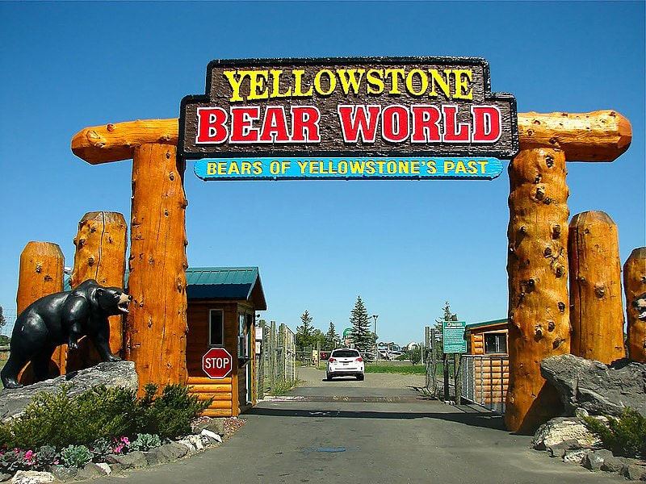
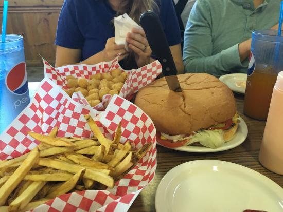

Discover what Rigby has to offer...
Rigby--The Birthplace of Television
The television tube was invented in a classroom at the High School. Philo T. Farnsworth was looking at a field of potatoes and how the rows were laid out. He got the idea of creating a television tube in lines. You can visit and learn all about it in the Rigby Museum.
Labelle Ice Palace
The Wadell family has been ice sculpting for 5 years now. This is an amazing site to see at night during the winter.
Rigby Lake
During the summer, Rigby Lake is the best place to hang out when it is hot and sunny out! We get people from all over the southeaster Idaho to camp at the lake and many family reunions also enjoy the facilities.

Bear World
Bear World is a great place to visit and see the local wildlife. You can even get your picture taken with a bear cub!
Bambinos Resturant
One of the most unique foods is a Bambino. It is a must when you come to Rigby that you eat a Bambino!

Big Jud's
Big Jud's has the world's famous 2 pound hamburger! It was featured on the show "Mark eats it all!" They make their own hamburger bun so the hamburger patty will fit on it. It is the best diner experience you will ever have!